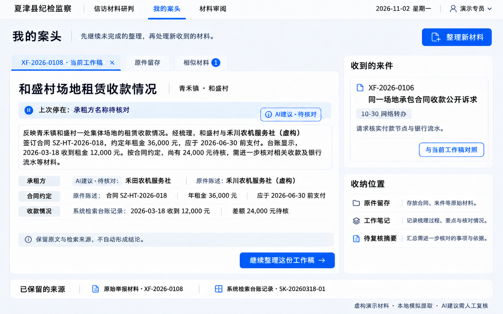
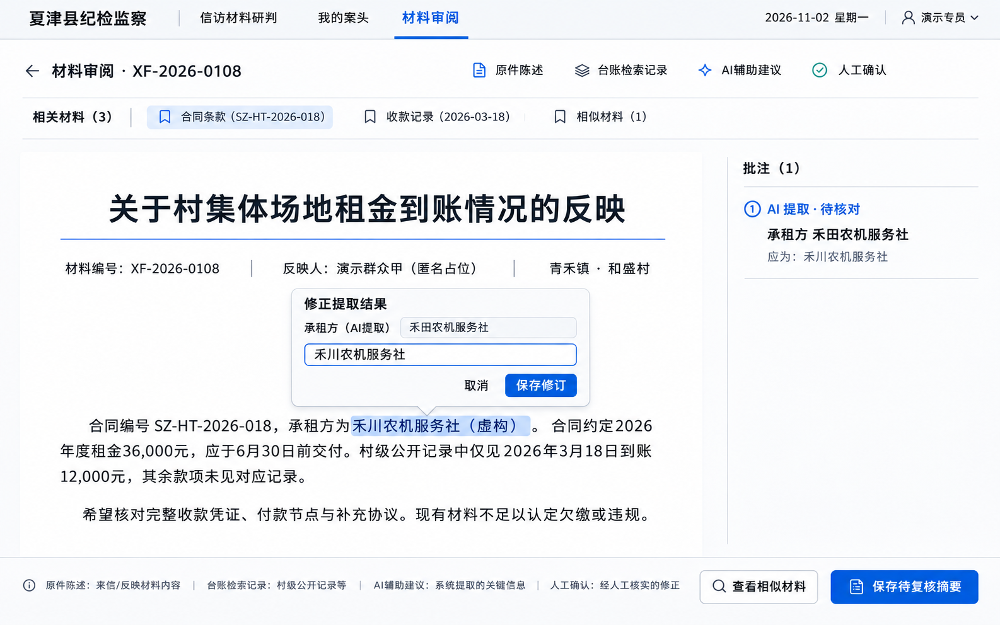

01 · 工作入口
当前工作稿、上次停点与收到的来件，直接接续日常工作。
查看完整视觉稿 ↗当前工作稿、上次停点与收到的来件，直接接续日常工作。

02 · 材料审阅
原文是主体，提取修订与依据贴着材料出现；保存摘要与提交复核分开。
查看完整视觉稿 ↗原文是主体，提取修订与依据贴着材料出现；保存摘要与提交复核分开。
阶段B · 静态视觉组合稿，非功能原型或浏览器截图。全部案例虚构，生成图中的局部文字字形仍需在原生排版中逐字核对；统一案例原件承租方为“禾川农机服务社”，故意的AI提取错误为“禾田农机服务社”。原系统未修改。阶段 C 原型独立保留于 prototype/；按用户最新要求，实际页面由用户自行验收。